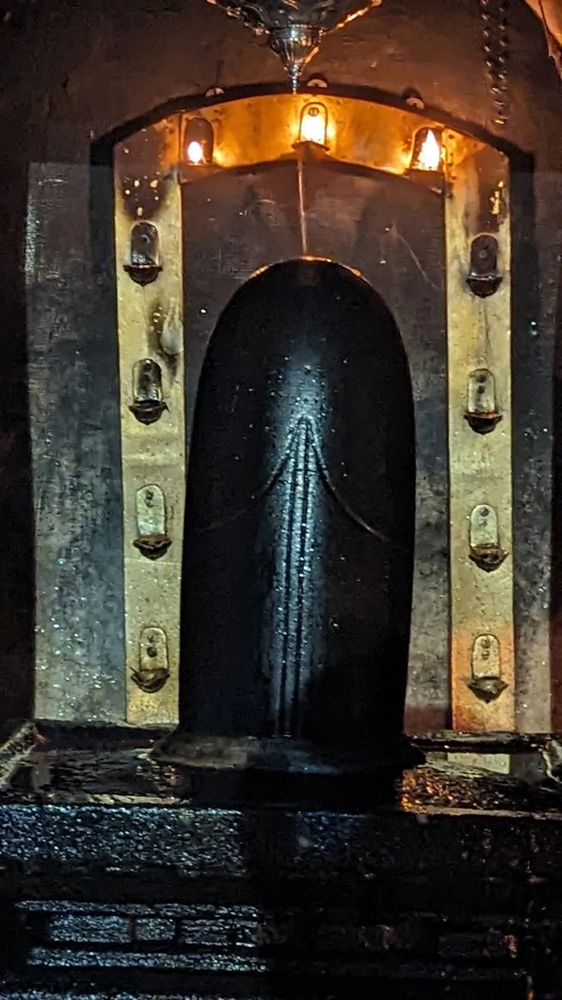
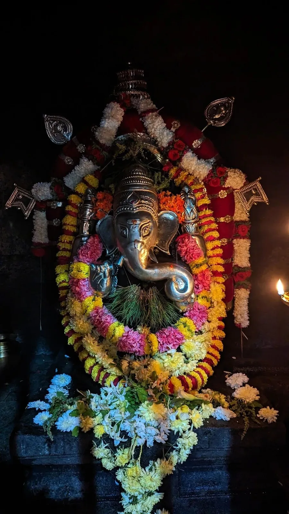
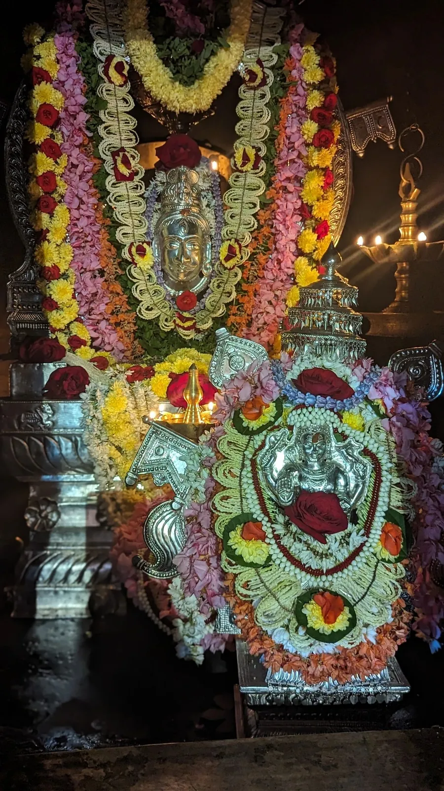

ABOUT THE TEMPLE
The temple
Sri Somanatheshwara Guhalaya in Nellitheertha, Karnataka, is dedicated to Sri Somanatheshwara (Shiva).
Deities

The main deity of the temple is Sri Somanatheshwara (Shiva). The temple also has Mahaganapati (the elephant-headed God) and Jabali Maharshi as deities here. In fact, the Jabali Maharshi Brindavana was recently constructed.
The Lingam of Sri Somanatheshwara has been made out of pure Saligrama and is considered very sacred. The Lingam has been built as Ardhanareeshwara.

The temple of Sri Mahaganapati has been rebuilt recently and is splendid in itself.
The bhootas
In typical Tulu-naadu (Tulu is the native language in this part of the woods) tradition, the temple also has its set of “Bhootas”. Bhootas are considered as the “Ganas” or warrior-assistants of the Gods. According to mythology, bhootas are appointees of Shiva and they administer the temple/village. The main bhootas of the Nellitheertha temple are Pili-Chamundi (Pili means Tiger in Tulu), Kshetrapala, Raktheshwari and Doomavathy.
The Bhoota Kola at the annual jaatre
Around the temple
There are other artifacts in and around the temple which are pointers to the past glory of this place. Among them are the “Arasule Mancha” (King’s seat), “Arasule Mantapa” (King’s abode) and the “Jina Vigraha” (Jain statue).
Arasule Mancha
The “Arasule Mancha” or King’s seat is situated near the main entrance of the temple towards the north. Historical evidence suggests that this seat was where the king of the land used to be seated when he visited the temple. It is believed that even today, the spirits of the former rulers visit the place at night and so it is prohibited to sit on the seat after dusk.
Nagappa Kere
The “Nagappa Kere” (Snake Pond) is a small pond situated to the north of the temple. This natural pond, along with its religious significance, is also a scenic spot. All devotees who want to enter the cave temple have to clean themselves by taking bath in this pond and only then are they allowed into the cave. The lake is at its best immediately after the monsoons (October to December) when its crystal clear water is a swimmer’s delight. There are plans to build a small herbal park around this pond as also a small deer park.
Amblattapadavu
To the east of the temple’s entrance is the Amblattapadavu hillock. This hillock is about 300 to 500 feet high and offers a splendid scenery from the top. One can spot places such as the Bajpe Airport, Mangalore, Panambur, the MRPL refinery and Surathkal. On a day with clear skies, one can even spot the Arabian Sea. Amblattapadavu offers a wonderful view of sunrise and sunset every day.
Open to all

The Nellitheertha temple is a symbol of secularism. The temple and the cave is open to members of all beliefs and castes. Any person, above the age of 5, is allowed to enter the cave irrespective of gender. Truly, Nellitheertha is a special and model place.